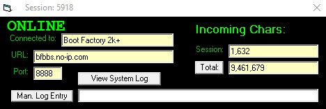

The Status Window
The Status Window is a new feature (as of 3.12 - Xeraxes) which displays some status information about the current session, connection, BBS and incoming character counts. There is also a button for viewing the System Log as well as one for manually entering some text as a log entry to the System Log.